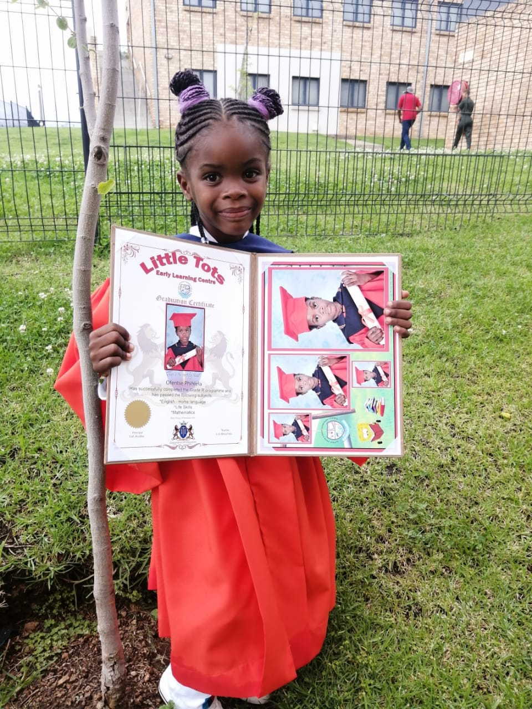
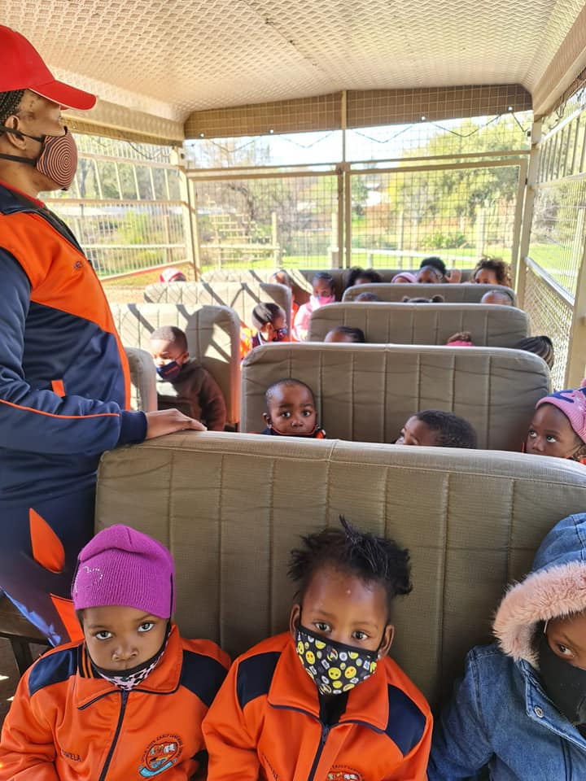
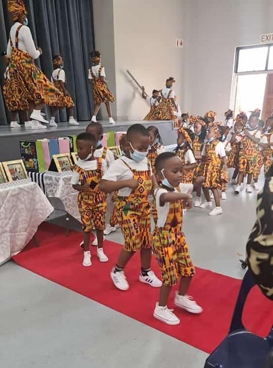
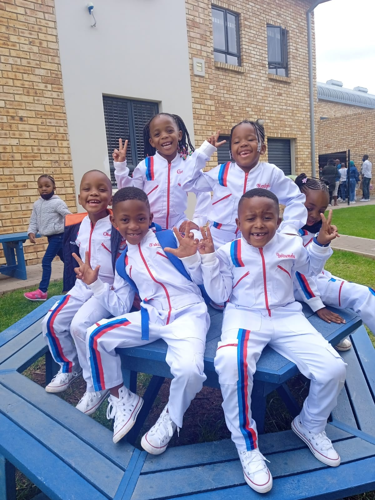

Why Choose Little Tots?
Choosing the right early learning centre is one of the most important decisions you’ll make for your child. At Little Tots, we focus on more than just care — we focus on building confident, curious, and happy little learners.
Our approach combines structured routines with playful exploration, ensuring children feel secure while developing socially, emotionally, physically, and intellectually.
- 🌈 Safe, loving & stimulating environment
- 🎨 Learning through play & creativity
- 👩🏫 Qualified, caring & attentive teachers
- 🧸 Small groups for individual attention
- 📚 Strong foundation for school readiness

Our Educational Programs
Each program at Little Tots is carefully designed to support your child’s development at every stage, blending care, learning, and fun in a nurturing environment.

Infant Care
6 weeks – 18 monthsOur Infant Care program provides a calm, secure, and loving space where babies can grow at their own pace. We focus on sensory stimulation, bonding, tummy time, music, and gentle routines that promote emotional security and early motor development.

Toddler Program
18 months – 3 yearsToddlers are encouraged to explore, express themselves, and build independence. This program includes music, storytelling, creative art, outdoor play, and early social interaction to strengthen communication and confidence.

Preschool Program
3 – 5 yearsOur Preschool program prepares children for formal schooling through structured play, early literacy, numeracy, problem-solving activities, and routine-based learning — all while keeping learning fun and engaging.
Moments of Joy & Learning


